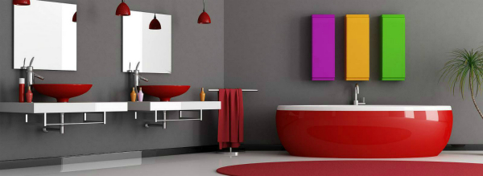
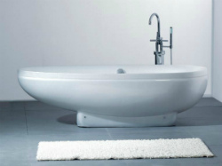
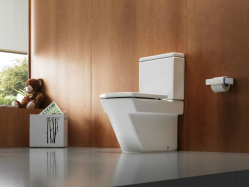
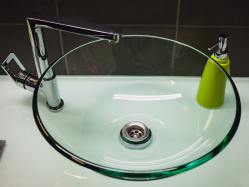

Компанія Водрем Плюс надає такі послуги:
- проведення мереж водопостачання;
- монтаж систем каналізації та водовідведення;
- встановлення індивідуального опалення;
- монтаж підігріву підлоги;
- встановлення баків запасу води та насосів;
- встановлення газових та твердопаливних котлів;
- встановлення бойлерів.

Зварювання — це технологічний процес утворення нероз'ємного з'єднання між матеріалами при їх нагріванні та/або пластичному деформуванні за рахунок встановлення міжмолекулярних і міжатомних зв'язків. Відомо близько 70 способів зварювання. В основу їхньої класифікації покладено дві ознаки: агрегатний стан матеріалу в зоні зварювання та вид енергії, яка використовується для утворення з'єднання.
Компанія Водрем Плюс здійснює зварювання такими способами:
- електрозварювання;
- газозварювання.
Зазначимо, що електрозварювання - це зварювання матеріалів, яке ґрунтується на використанні електричної енергії, яка в зоні з'єднуваних ребер перетворюється на теплову енергію.
В свою чергу, газозварювання - це з'єднання кромок деталей, що здійснюється за рахунок розплавлення їх від дії високої температури. У будівництві та на виробництві використовують різні види труб, і багато з них можна з'єднувати шляхом зварювання. Станом на сьогодні вважається, що з усіх нероз'ємних з'єднань - зварювання є найбільш надійним.
Наша компанія надає послуги електрозварювання та газозварювання використовуючи найсучасніші інструменти, що забезпечує максимально якісне надання зварювальних послуг за короткий час.
Компанія Водрем Плюс здійснює встановлення санфаянсу:
- ванни;
- умивальники;
- унітази;
- біде;
- душові парові кабіни;
- гідромасажні ванни.



Мабуть найважливішими етапами в процесі реалізації будь-яких сантехнічних робіт є їх планування та проектування. Компанія Водрем Плюс у комунікації з замовниками послуг використовує індивідуальний підхід, пропонуючи оптимальні рішення, які базуються на досвіді компанії та бажанні замовників.
Компанія Водрем Плюс надає комплексні послуги проектування, а саме:
- проектування систем індивідуального опалення у квартирах, заміських будинках, інших житлових та нежитлових приміщеннях;
- проектування систем резерву води;
- проектування мереж водопостачання, водовідведення та каналізації.
Проектування зазвичай залежить від багатьох різних чинників, серед яких доцільно відзначити:
- призначення приміщення, яке проектують, тобто здійснюються відповідні розрахунки в залежності від того, до прикладу, чи це приміщення житлове чи нежитлове;
- розмір приміщення, що проектується;
- склад матеріалів з яких побудовано приміщення, що проектуються;
- наявність будь-яких обмежень щодо проектування.